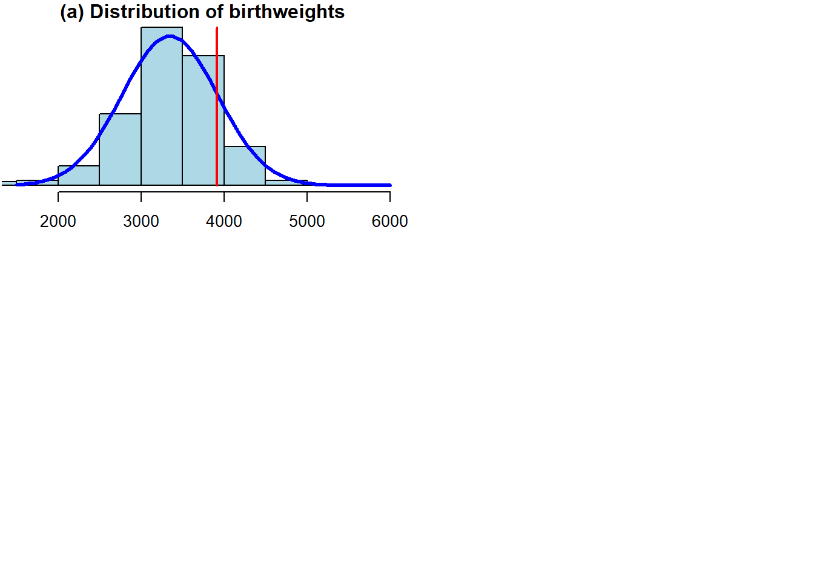
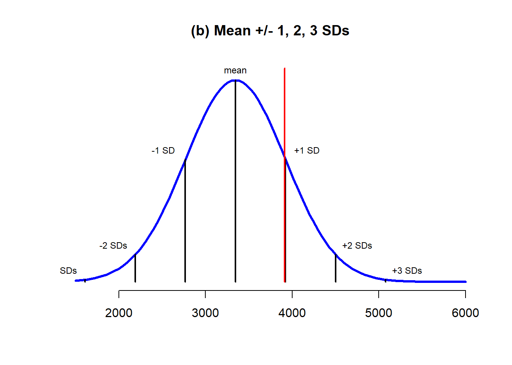
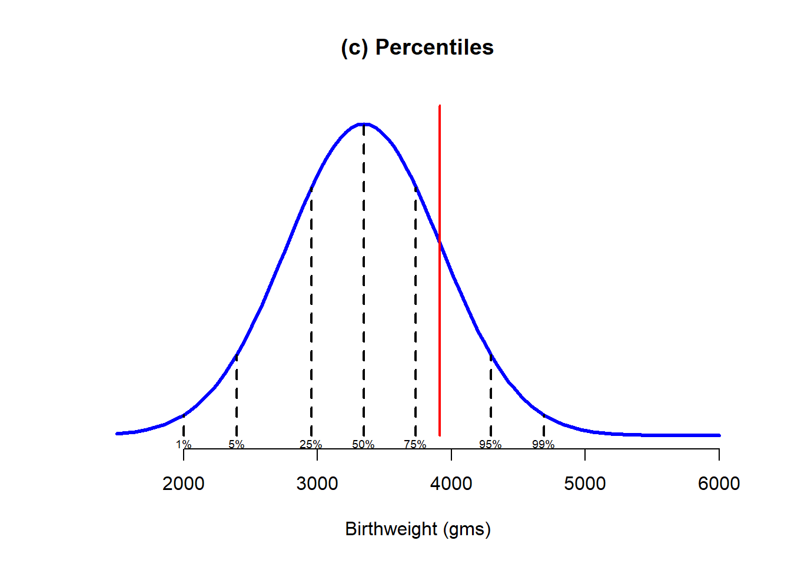

Chapter 3 Associations and Relationships
This chapter supplements the content in Lecture 5.
3.1 Correlations and Associations
First, let’s look at the basic concepts of correlation, using some data from the World Happiness Report, and GDP from the World Bank, all put together by the team at Our World in Data.
You can explore their work here: https://ourworldindata.org/
First, I can just double check the data by describing it.
## vars n mean sd median trimmed mad
## Country* 1 249 125.00 72.02 125.00 125.00 91.92
## Happiness 2 153 5.49 1.12 5.53 5.52 1.16
## GDPpc 3 197 20463.88 20717.34 12655.00 17037.01 13338.95
## Pop 4 242 59178643.60 331869505.09 5596196.00 12318073.38 8185922.38
## min max range skew kurtosis se
## Country* 1.0 2.490000e+02 2.480000e+02 0.00 -1.21 4.56
## Happiness 2.4 7.820000e+00 5.420000e+00 -0.26 -0.38 0.09
## GDPpc 731.0 1.125570e+05 1.118260e+05 1.58 2.55 1476.05
## Pop 809.0 4.663087e+09 4.663086e+09 11.65 152.44 21333379.77We’ve got 249 countries, with population, GDP per capita, and Happiness. There’s a fair bit of missing data, which you can see by looking at the numbers in the n column. That’s ok, as long as we are aware of it.
Let’s plot this data using a very basic scatterplot.
Interpretation: there’s seemingly an association here. As one variable increases, the other does too.
It’s worth noting that I have chosen to put GDPpc on the x-axis, which implies that the driver of Happiness is GDP. This replicates the way that most of the media articles that are regularly written on this kind of topic do it.
Nevertheless, this is just a scatterplot, so there is no real requirement to put any particular one of the variables on the x-axis, because it’s important that you do NOT draw any causal conclusion from this very basic scatterplot. Simple associations are not in any way conclusive evidence of any causality in the relationship, since there are many other things which could be going on that are impossible to tease out simply with a bivariate association seen on a scatterplot. For example, there could be a spurious relationship - what could cause both happiness and GDPpc to increase?
Ideas? Could it simply be something like ‘political stability’? Or something else?
Either way, all we have here is a basic data display. While, as I showed previously, simply displaying data can be very powerful, it is still only essentially an ‘eyeball’ analysis, and different people might draw different conclusions here (we’ll discuss that later on).
What we want to do, is have some sort of objective metric for the relationship, and for this, we have the correlation statistic.
##
## Pearson's product-moment correlation
##
## data: Happy$Happiness and Happy$GDPpc
## t = 13.502, df = 146, p-value < 2.2e-16
## alternative hypothesis: true correlation is not equal to 0
## 95 percent confidence interval:
## 0.6636288 0.8092331
## sample estimates:
## cor
## 0.745184Here, we can see that the correlation is 0.75
But what does that mean? We can return to the slides for some explanation.
3.2 Introducing Nonlinear Associations
Let’s return to the scatterplot of GDPpc and Happiness

As the Economist analysis discussed in the lectures suggests, this association also looks kind of nonlinear.
However, unlike the Economist, we can also say that there are multiple ways to look at this:
First, you could take the Economist’s view that this is probably a nonlinear relationship. Indeed, we can check this out by transforming GDPpc and comparing the results between transformed and non-transformed data.
Let’s have a try at that. What we will do is transform the GDPpc variable using a log transform (i.e. multiplying GDPpc by the natural logarithm).
## vars n mean sd median trimmed mad
## Country* 1 249 125.00 72.02 125.00 125.00 91.92
## Happiness 2 153 5.49 1.12 5.53 5.52 1.16
## GDPpc 3 197 20463.88 20717.34 12655.00 17037.01 13338.95
## Pop 4 242 59178643.60 331869505.09 5596196.00 12318073.38 8185922.38
## GDPpc_log 5 197 9.38 1.14 9.45 9.41 1.33
## min max range skew kurtosis se
## Country* 1.00 2.490000e+02 2.480000e+02 0.00 -1.21 4.56
## Happiness 2.40 7.820000e+00 5.420000e+00 -0.26 -0.38 0.09
## GDPpc 731.00 1.125570e+05 1.118260e+05 1.58 2.55 1476.05
## Pop 809.00 4.663087e+09 4.663086e+09 11.65 152.44 21333379.77
## GDPpc_log 6.59 1.163000e+01 5.040000e+00 -0.25 -0.79 0.08We can see there is a new variable now, GDPpc_log, which is the log transformed GDPpc variable - basically the original GDPpc variable multiplied by the natural logarithm.
Of course, there are many other possible transforms, and I’ll touch on that below, for now let’s rerun the plot using GDPpc_log

That relationship definitely looks more linear, and if that was my only criteria for deciding what to do with the data, I would definitely now run with this idea, as the Economist did in their article
With that in mind, let’s take a quick look at the correlations for these variables. First the original GDPpc, and then the log transformed one.
##
## Pearson's product-moment correlation
##
## data: Happy$Happiness and Happy$GDPpc
## t = 13.502, df = 146, p-value < 2.2e-16
## alternative hypothesis: true correlation is not equal to 0
## 95 percent confidence interval:
## 0.6636288 0.8092331
## sample estimates:
## cor
## 0.745184##
## Pearson's product-moment correlation
##
## data: Happy$Happiness and Happy$GDPpc_log
## t = 15.916, df = 146, p-value < 2.2e-16
## alternative hypothesis: true correlation is not equal to 0
## 95 percent confidence interval:
## 0.7287785 0.8487456
## sample estimates:
## cor
## 0.7964703We can see that the association is stronger (the correlation is higher) for the log GDPpc variable, although to be honest, it is not a very big difference here, compared to other data sets that I have seen discussed in the media. That’s interesting in itself (note we are using 2020 data, so maybe the pandemic has something to do with it?)
However, transformations of data are kind of a complicated topic though. In essence, what we are doing is changing the distribution of one (or more) of the variables, in a systematic way, in order to convert a non-linear relationship (which may be unable to be tested with methods like correlation and regression) into a linear one.
There are many different types of transformations available to you, and the one you choose depends on the form of the nonlinearity. A log transform converts an exponential (or similar) relation into a linear one. But, there are specific transforms for many different forms. Oftentimes, it’s not always obvious what exactly to do, and people often default to transforming any nonlinear-looking relationship, or highly skewed variable, using log or maybe the quadratic (squaring). It’s not really that simple though, and I think we need to be a bit more logical and theory-driven on why we transform variables.
In this case, I admit that the logic makes sense, that there is still a relationship between GDPpc and happiness at the top end, but you just have to increase GDPpc by a lot more to get the same change in happiness, compared to the change needed at the lower end of GDPpc. And, making that transform to come to that conclusion actually makes a difference to how we think of the influence of GDPpc on happiness, and could concievably lead to policy changes compared to the prior non-transformed analysis.
Even so, I have always had a slightly different possibility on my mind. In fact, it may be that there are two groups of country, low and high income, and different linear associations within those groups. That’s a similar-ish idea to the nonlinear one, but it is a bit different, and I actually prefer that idea. A nice challenge would be to work out a way to test which of the two alternative explanations is actually better supported by the data…
Maybe I’ll leave that for another day though.
3.3 Regression
We can add a regression line to this scatterplot, for some extra information over the correlation.

We can also do this with the log GDPpc to compare.
You can see that using the log GDPpc variable does improve things, but not by that much in my view. That said, it’s clear that the line is a bit more ‘precise’ (the errors are lower which can be seen by the narrower shaded regions). So, if we are looking for the ‘best’ model, it’s pretty clear that the log GDPpc model is better than the simple GDPpc model.
Either way, the regression line adds a layer of information on to the correlation, which allows us to predict y from x.
How so? Well, let’s add the regression equation to the chart to see:

This adds an intercept, and with that plus the coefficient we have all that we need to plot a straight line, which we can extrapolate to higher values of GDPpc (although remember this is the logged GDP variable) and predict what the happiness scores would be.
This is obviously viable to the extent we can justify the relationship, and also within the parameters of our variables, and how confident we are that the relationship is consistent at all levels of the variables.
3.4 Multiple Regression
Here, we will use a simple three-variable set of simulated data, which represents rates of smoking, rates of cycling, and heart disease incidence. This data is available from: https://www.scribbr.com/statistics/linear-regression-in-r/
Remember, this is simulated data not real data.
## vars n mean sd median trimmed mad min max range
## ...1 1 498 249.50 143.90 249.50 249.50 184.58 1.00 498.00 497.00
## biking 2 498 37.79 21.48 35.82 37.71 27.51 1.12 74.91 73.79
## smoking 3 498 15.44 8.29 15.81 15.47 10.86 0.53 29.95 29.42
## heart.disease 4 498 10.17 4.57 10.39 10.18 5.42 0.55 20.45 19.90
## skew kurtosis se
## ...1 0.00 -1.21 6.45
## biking 0.07 -1.22 0.96
## smoking -0.04 -1.12 0.37
## heart.disease -0.03 -0.93 0.20Next, let’s run three simple regressions among the three variables



Remember, these are simple regression lines, with bivariate scatterplots. What I mean, is the effect of biking on heart disease does not take account of the effect of smoking on heart disease. What we need to do is run a model which takes account of both the predictors, as we can explain on the slide-deck…
Now we can run the Multiple Regression Model
##
## Call:
## lm(formula = heart.disease ~ biking + smoking, data = Heart)
##
## Residuals:
## Min 1Q Median 3Q Max
## -2.1789 -0.4463 0.0362 0.4422 1.9331
##
## Coefficients:
## Estimate Std. Error t value Pr(>|t|)
## (Intercept) 14.984658 0.080137 186.99 <2e-16 ***
## biking -0.200133 0.001366 -146.53 <2e-16 ***
## smoking 0.178334 0.003539 50.39 <2e-16 ***
## ---
## Signif. codes: 0 '***' 0.001 '**' 0.01 '*' 0.05 '.' 0.1 ' ' 1
##
## Residual standard error: 0.654 on 495 degrees of freedom
## Multiple R-squared: 0.9796, Adjusted R-squared: 0.9795
## F-statistic: 1.19e+04 on 2 and 495 DF, p-value: < 2.2e-16We can interpret these results in the following way:
A 1 unit increase in biking will on average lead to a 0.2 unit decrease in heart disease A 1 unit increase in smoking will on average lead to a 0.17 unit increase in heart disease.
Of course, what these ‘units’ refer to depends on what you have measured them with of course. But, the unarguable interpretation is that the effect is strong.
However, because the scales of the variables are different, its not really possible to compare the sizes of the effects. So to some extent we don’t know which of the two variables has the ‘bigger’ effect here, relatively at least.
To do that, we need to standardize the coeffiecients, which basically means putting all the variables on the same scale. Beforehand, they all were on different scales, which you can see by going back up and looking at the range, mean, and standard deviation of the original variables. You can see for yourself they are all different.
We can solve this issue by creating a new set of standardized data, and running the model on that, as follows:
## vars n mean sd median trimmed mad min max range skew
## ...1 1 498 0 1 0.00 0 1.28 -1.73 1.73 3.45 0.00
## biking 2 498 0 1 -0.09 0 1.28 -1.71 1.73 3.43 0.07
## smoking 3 498 0 1 0.05 0 1.31 -1.80 1.75 3.55 -0.04
## heart.disease 4 498 0 1 0.05 0 1.19 -2.10 2.25 4.35 -0.03
## kurtosis se
## ...1 -1.21 0.04
## biking -1.22 0.04
## smoking -1.12 0.04
## heart.disease -0.93 0.04You know these variables are standardized as they now all have a mean of 0 and a standard deviation of 1. Now, let’s run our model on this standardized data set.
##
## Call:
## lm(formula = heart.disease ~ biking + smoking, data = std_Heart)
##
## Residuals:
## Min 1Q Median 3Q Max
## -0.47658 -0.09762 0.00792 0.09671 0.42283
##
## Coefficients:
## Estimate Std. Error t value Pr(>|t|)
## (Intercept) -6.119e-17 6.410e-03 0.00 1
## biking -9.403e-01 6.418e-03 -146.53 <2e-16 ***
## smoking 3.234e-01 6.418e-03 50.39 <2e-16 ***
## ---
## Signif. codes: 0 '***' 0.001 '**' 0.01 '*' 0.05 '.' 0.1 ' ' 1
##
## Residual standard error: 0.1431 on 495 degrees of freedom
## Multiple R-squared: 0.9796, Adjusted R-squared: 0.9795
## F-statistic: 1.19e+04 on 2 and 495 DF, p-value: < 2.2e-16You can see the things that have changed are the ‘Estimates’, which are now standardized.
In decimal, they are -0.94 for biking and 0.32 for Smoking.
The correct interpretation of these standardized effects is that for every 1SD increase in biking, you expect a 0.94SD decrease in heart disease, and for every 1SD increase in smoking, you would expect a 0.32 increase in heart disease.
So, we can see that actually biking has a much higher relative effect on heart disease than smoking (although in the opposite direction). That said, this assumes that both the two IVs have similar standard deviations, and distributions, and we didn’t check that in this example.
3.5 Visualizing Multiple Regression
There are loads of different ways to visualize multiple regression. It’s not trivial, because we have more than two variables, so we can’t use the techniques we used already.
Some people like to use 3D-style plots, which look cool, but are not always easy to interpret, and take quite a lot of extra work, for what I would say is not that much payoff (if any).
In this case, we can use a pretty simple visualization, where we could plot the relationship of biking to heart disease at different levels of smoking.
This would be a fairly typical way to do things if we thought the relationship between biking and heart disease changed according to the level of smoking, in which case it would be a moderator. Here, it doesn’t really work that way, but it’s a cool visualization regardless. It does require some data prep, but not that much, and I took the basic idea from the website where I sourced the data: https://www.scribbr.com/statistics/linear-regression-in-r/
Here, we can see that the effect of smoking is really just to raise the likelihood of heart disease, however much biking you do.
So, for a given person who bikes a given amount, if they smoke more they will have a higher risk than a person who bikes the same amount but smokes less.
But, for a given smoker, the more they bike, the lower their risk of heart disease, to the extent that if a heavy smoker bikes enough, their actual risk of heart disease could even be lower than a non-smoker who does not bike at all.
Don’t forget, this is not real data, but the point stands. Get on your bike.